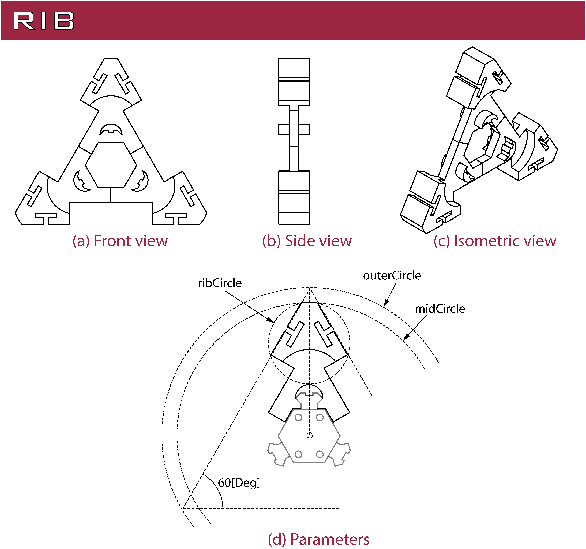
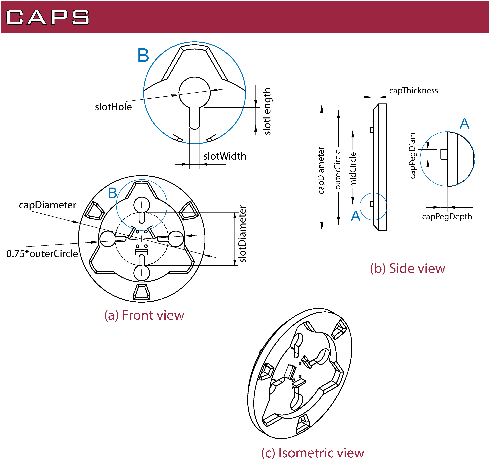
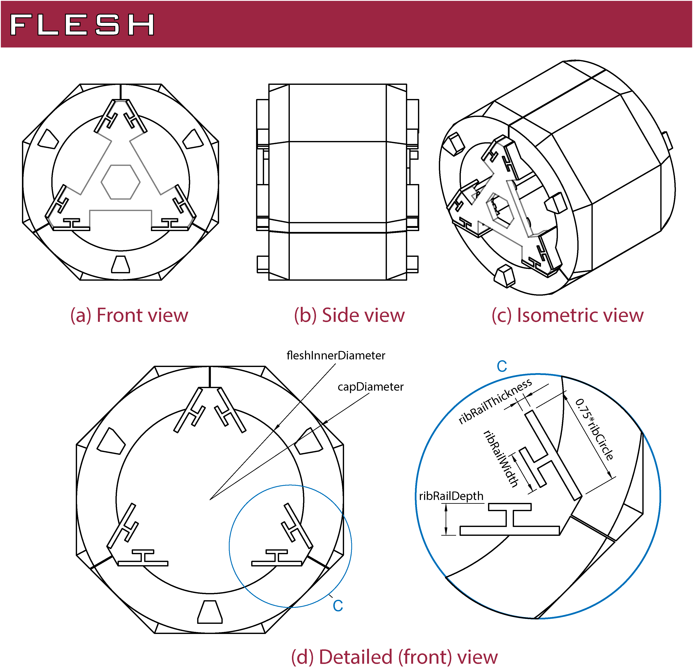

Introduction
As mentioned before, a module of OPPAS is divided into two parts: the link and the joint. The link's main objective is to give structure to the robot and it has a big influence on the total length of the robot. In addition it will house the components (e.g., batteries, sensors, microcontroller boards). Depending on the robot you need, you may skip the link altogether and just put together a bunch of joints.
Link of OPPAS
The link is divided into two sets of parts: the skeleton and the flesh. The main role of the skeleton is to provide the structure of the robot. The main parts of the skeleton are:
| Part | Description |
|---|---|
| spine | Provides the main support for the link |
| ribs | Additional strucutre to attach the flesh components to the spine |
| caps | It helps to put all together and enclose the internal components. It also provides an iterface with the joint's parts |
Spine
The design of the spine provides a flexible way to attach extra components. The idea is that you can design a specific base for the components you use, and then attach it to the spine. The spine has a set of rails and the geometry of these can be controlled parametrically. The final length of the spine is controlled by the number of segments (rail's teeth + spacing) and the geometry of these.
The main parameters of the spine that can be changed are summarized as follows:
| Spine's parameter | Description |
|---|---|
spineInnerDiameter |
The spine has an hexagonal cross-section, circumscribed on a circle with a diameter called spineInnerDiameter. A set of four M2.5 screw holes are automatically generated, coincident with a circle 80% the size of spineInnerDiameter. This allows the holes to be generated automatically and always consistent with the spine diameter. Change this parameter to a fixed value if you require it. |
rail* |
The set of parameters related to the rail design (railNeck, railWidth, railInnerWidth, railHeight) controls the geometry of the cross-section of the rail. The parameters railSpacing and railThickness control their geometry along the longitudinal axis of the spine. One 'segment' is composed of one rail's segment (I sometimes call them teeth) and a spacing. |
noSegments |
Number of segments (rail's tooth + its spacing) composing the spine. |
linkLength |
The final length of the link is controlled by how many segments (a tooth and its spacing) you need, and its size controlled by railSpacing and railThickness. If you need a constant rail just set railSpacing=0, railThickness=desired length, and noSegments=1. This allows to generate a link always consistent with a discrete number of teeth. |
Rib
The main role of the ribs is to attach the flesh components to the spine. A secondary objective I had into mind is to also provide a strucutre to attach extra components (e.g., sensors) if required. However, I have not implemented this yet.
Once the three components of the flesh are slided into the ribs, their movement is constrained without the need of extra parts, like bolts or screws.
The model of OPPAS that can be currently downloaded does not provide additional holes to attach the vertebras to the spine.
It relies completely on friction and the form-closure achieved when the flesh parts are attached.
This is to keep the design consistent and avoid problems, since a screw hole of a given size may not be compatible with the user's chosen railThickness.

The main parameters of the ribs that can be changed are summarized as follows:
| Rib's parameter | Description |
|---|---|
midCircle |
This parameter is seen along several parts of OPPAS. For the ribs, it works along outerCircle to generate the strucutre of the ribs. |
outerCircle |
This parameter controls the size of the ribs. An equilaterla triangle is inscribed into a circle with diameter outerCircle and used to control the rib's size. Note: The parameters midCircle and outerCircle should always follow the constraing: |outerCircle| > |midCircle|. I have not found a good bound on this value (since the geometry is influenced by other parameters), but try to keep it with at least a 10[mm] difference. |
ribCircle |
Final parameter to control the size of the rib. This parameter is not used in any other part of the design. |
Caps (also called moduleCaps)
The caps enclose the link and provide an interface with the joints. In addition, the interior of the caps accomodates to the ribs for extra support. Four slots are provided to pass cables, which location and size can be controlled by the user. Additional pegs provide extra strength to the design to avoid rotations along the longitudinal axis.

The main parameters of the caps that can be changed are summarized as follows:
| Cap's parameter | Description |
|---|---|
capDiameter |
The outer diameter of the caps. It should be at least as big as outerCircle, but I recommend it a little bigger. In current implementation of OPPAS, the value is set as capDiameter = 1.1*outerCircle. |
outerCircle |
Outer circle will be the diameter of the cap contacting the joint's parts. |
capThickness |
Thickness od the cap (not considering the internal cavity where the ribs fit). |
slotDiameter |
Control the location of the slots. In the current design of OPPAS, the parameter is set as slotDiameter = 0.5*midCircle to keep the design consistent. If requiered, change this to a fixed value. |
slotThikness |
Thickness of the slots. |
slotLength |
Length of the slots. |
slotHole |
Diameter of the slot's hole. Use this to pass cables with connectors. In general, I advice slotHole to be at least 10[mm]. |
midCircle |
A set of four pegs are generated automatically at a circle with this diameter. If needed, change this to a fixed value. |
capPegDiam |
Diameter of the pegs. |
capPegDepth |
Length of the pegs. I use 'depth' since a matching hole is generated into other parts. |
Flesh
The flesh components are the main interface between the robot and the exterior. These parts can be designed independently from the rest of the design, but I provide a set of parts as an example. The flesh parts slide into the ribs and provide extra constraints. Once all parts of the flesh are inserted, the ribs should not be able to come apart from the spine.

The main parameters of the flesh that can be changed are summarized as follows:
| Flesh's parameter | Description |
|---|---|
fleshInnerDiameter |
The inner diameter of the flesh parts is controlled by this parameter. The strength and available space inside the robot are affected. The outer size is the same as capDiameter. You can change these values accordint to your application. |
ribRail* |
The set of parameters (ribRailThickness, ribRailWidth, and ribRailDepth) control the geometry of the rails that slide into the ribs. There is a built-in tolerance for the rails, so that they fit correctly into the ribs even if there is shrinking of the material. |
The flesh parts in OPPAS Mk. 1 should not be considered as a definite design. The purpose of OPPAS is that they can be redesigned to accomodate to your needs, without needing to change (drastically) the rest of the parts. Several designs of the flesh could be designed and used in the same base robot. Chek the section Optional parts for a description of some parts that have been designed so far.
A flesh part with the BioInMech (Biomimetic Intellignet Mechatronics) Laboratory is provided.
Joint of OPPAS
The joint of OPPAS is composed of two parts: uBracket and servoBase. These are the parts that would requiere the most effort from the user if another servo is used. I apologize for this, but I have not found a good and reliable way to parametrize this, since the desgin of servomotros is in general very inconsistent. OPPAS Mk. 1.0 is designed with Dynamixel MX-64AR servos in mind. However, some of the parameters can be changed by the user to get a design as close as possible as the one requiered.
uBracket
The uBracket connects the servo's horn to the link, providing motion. There are four slots, designed so that the link can be connected with a 90[deg] angle to provide flexibility in the construction of your robot. If the axes of all servos are parallel, the result is what is known as 'planar snake robot'. What is known as 'serpentine' or 'undulatory' locomotion can be achieved. With the motors connected with an offset of 90[deg], 3D motions can be achieved. However, I cannot guarantee the robustness of the current implementation of OPPAS, sine 3D motion usually comes with impacts and additional interaction with the environment.
The outer diameter of the uBracket is controlled by capDiameter and the slots are designed to math the ones in the module caps.
The main parameters of the uBracket that can be changed are summarized as follows:
| Flesh's parameter | Description |
|---|---|
uBracketThickness |
Thickness of the uBracket. |
hornLength |
Distance from the uBracket base to the axis of the servomotor. The longer hornLengthis, the bigger the range of motion of the joint. However, this means a weaker uBracket. |
servoBase
The servoBase of OPPAS is designed for the MX-64AR servos of ROBOTIS. Therefore, no extra parameters are provided to the user.
Result
The final module obtained can be seen in the following picture.
The values for the parameters are summarized in the following table: